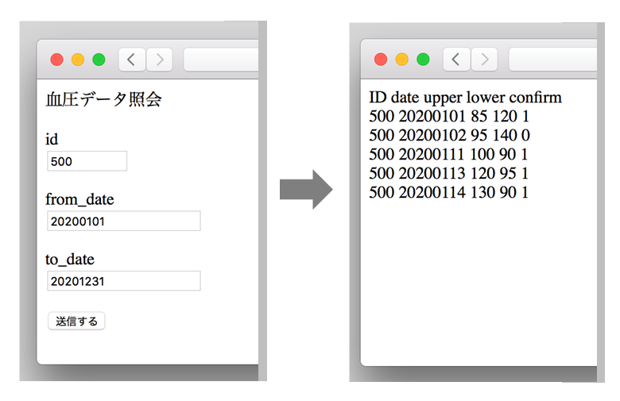

データの照会と更新（PHP/SQL）
Objective-CアプリケーションからMySQLデータベースに対して、データの読み書きを行う方法について「血圧管理カレンダー」を例に説明する。
本章では、サーバーサイドの処理として、PHPスクリプトによりSQLコマンドを実行し、データの照会・更新する手順について説明する。
サーバーとのやり取りは、HTTPのPOSTコマンドインタフェースとし、リクエストパラメータは x-www-form-urlencoded 形式、レスポンスデータはJSON形式とする。
MySQLデータベースの定義
データベース名：health
テーブル名：blood_pressure（血圧データ）
PHPスクリプト
(1) 言語の設定（init.php）
(2) データベースと接続する（MYDB.php）
データベースを利用するPHPスクリプトは、上記２ファイルをインクルードし、起動するごとにデータベースと接続する関数（db_connect）を呼び出す。
(3) データの照会
指定した日付の範囲の血圧レコードを読み込む
戻り値はJSON形式のデータにして返却する。
(4) データの更新
指定の日付の血圧レコードを追加または変更する
ブラウザで実行結果を確認する方法
HTMLフォームからPOSTコマンドを送信し、レスポンスデータをHTMLに編集して表示するようにする。

HTMLソース
PHPスクリプトを次のように修正する。POSTパラメータの有無で処理を制御するので、本番の動作に影響ない。